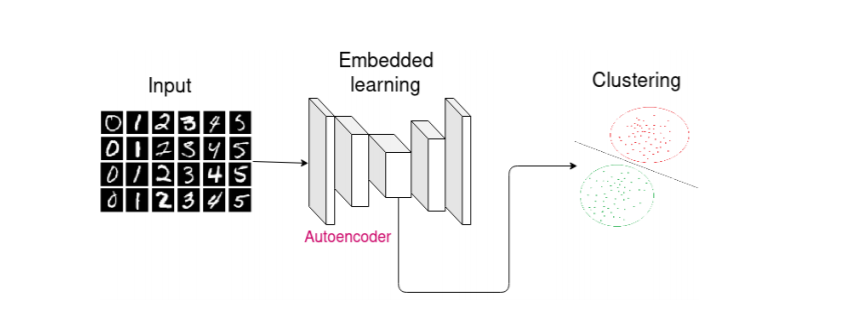
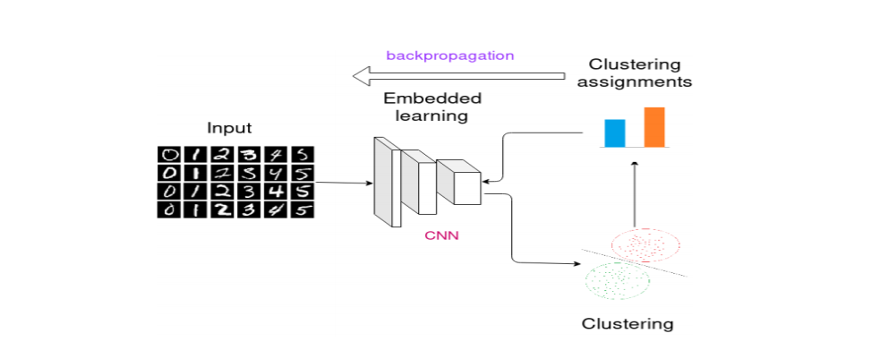
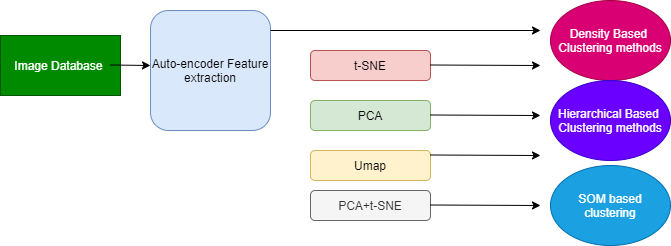

Lets get started with week-8
Last week we started with the neural network methods , continuing this week with the autencoder techniques .
There are generally two ways we can use the autoencoders
In this the data is first projected into the lower dimensional space using the autoencoder and then the features are used to perfrom the clustering (density, hierarchical and etc)

In this embedded learning and clustering are performed jointly. We will cover this deeply in the next week but the idea is autoencoder projects data points in a lower-dimensional space using an autoencoder. After that, the decoder is discarded and the encoder is trained to jointly improve the embedded representations and
the clustering centers

The images are taken from the this paper https://arxiv.org/pdf/1901.07752v5.pdf
This week I focused on the first case :
We performed the dimensionality reduction using the autoencoders. It comes under the feature transformation where we tries to project the high dimensional data into lower dimensions.Autoencoder is a encoder-decoder based network where encoder encodes the high dimensional data into the lower dimensions and the decoder takes the lower dimensional data and tries to reconstruct the original high dimensional data.
The general architecture of autoencoder is:

Autoencoder with a single layer and linear activation has similar performance as PCA.
Types of the autoencoder models :
1)Single layer autoencoder
2)Deep autoencoder
3)Sparse autoencoder
4)Convolutional autoencoder
5)Denoising autoencoder
https://www.jeremyjordan.me/autoencoders/
https://blog.keras.io/building-autoencoders-in-keras.html
For all the conventional features that we had extracted last week we used only edge features and the gray scale features ,we used single layer autoencoder , sparse layer autoencoder and deep autoencoder and project all three to the 32 dimensional vector and 3 different architectures of convolutional autoencoder. The denoising autoencoder uses the same convolutional autoencoder but just that we add the noise to the input so that the autoencoder is able to learn the hidden features and just dont copy the input to the output . After getting the feature vector we passed it through the other dimensionality reduction techniques and then finally applied the clustering models
Our detailed architecture is

Also I increased the filter in the case of the autoencoder to 10 each because 1) None of the results passed previous filter 2) I wanted to see the results of autoencoders
Text file
concatenated_autoencoder_results_text_file.txt
PDF file
grayscale_ideology_convolutional1-density-umap_optics_labels.pdf
prewitt_ideology_convolutional2-density-tsne_optics_labels.pdf
canny_ideology_denoisingConv-density-umap_dbscan_labels.pdf
grayscale_ideology_convolutional3-density-tsne_optics_labels.pdf
grayscale_ideology_denoisingConv-density-umap_dbscan_labels.pdf
Text file(all features)
PDF file
canny_ideology_convolutional3-all-features_optics_labels.pdf
prewitt_ideology_convolutional3-all-features_optics_labels.pdf
In addition to the autencoders , I increase the threshold in the clustering algorithms using the features (pretrained and conventional not autoencoders here ) and the results were
For the uncropped version:
Text file
concatenated_image_results_22july_text_file.txt
Pdf file
ideology2_model_densenet121-density-tsne_dbscan_labels.pdf
ideology2_model_densenet169-density-tsne_dbscan_labels.pdf
ideology2_model_mobilenet-density-tsne_dbscan_labels.pdf
For the cropped version:
concatenated_image_results_22july_crop_text_file.txt
ideology2_crop_model_inceptionv3-density-pca-tsne_dbscan_labels.pdf
ideology2_crop_model_inceptionv3-hierarchical-tsne_agg_labels.pdf
ideology2_crop_model_resnet50-density-umap_dbscan_labels.pdf
See you next week